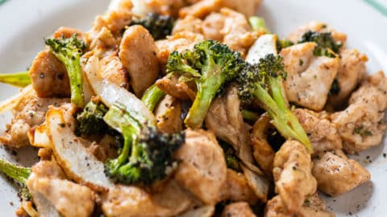

Keto Meal for Weight Loss
Description
When I was broke and in college, I used to eat a pound of pasta every day. Pasta was cheap, I was garbage at cooking, and I was poor. I'm now in my 30's, and I've noticed that I've been at the same weight for a while now. I'm pretty good at eating to maintain body weight, but my diet's not healthy enough to lose weight.
My friend Brian told me that working out helps lose weight, but the major contributor to weight manipulation is one's diet. What you eat is demonstrably more important to weight loss than working out.
CICO - Calories in, calories out
The guiding principle of weight loss is that the calories you intake should be lower than the amount of calories you use during the day. Working out increases the amount of calories you burn, but honestly just being alive takes a good amount of energy, and you passively burn lots of calories anyways. If you're too lazy to go to the gym and burn hundreds of calories, modifying your diet is the best way to lose weight.
Obvious Stuff
There's some obvious stuff you can do to your diet:
- Stop ingesting excess processed sugar. Cut out soda as much as possible. Diet soda too. Even though diet soda has 0 calories, studies show that artificial sweetners can make you crave sugary drinks.
- Eat more vegetables.
- Cut down on carbohydrates.
Basic Idea
The basic idea of this diet meal is to be high protein and high fiber. Fiber and protein are filling. This meal takes inspiration from keto and paleo. Consequently, it's boring as hell.

Ingredients
- Chicken. Chicken thigh, chicken breast, doesn't really matter too much. Chicken breast is better, but I find it to be kind of boring, so I usually get chicken thigh
- Italian seasoning and whatever other seasonings you like for chicken. Try to avoid sauces
- Olive oil
- Broccoli
- Carrots
- Salt
- Pepper
The Process
- Beat the chicken until it has a relatively even thickness.
- Put the chicken into a mixing bowl.
- Pour a splash of olive oil on the chicken
- Rub your Italian seasoning or cayenne pepper and paprika mix or whatever you like all over the chicken. Make sure to get it all in there so you get flavor in every bite.
- Throw it into an air fryer or oven at 195 degrees for about 12 minutes.
- Do something else. Like vegetable prep.
- Cut up your carrots and broccoli however you like them. Small bite size pieces, big chunks, whatever. However you like your veggies. Try to make all the broccoli about the same size. Same with the carrots.
- Fill a pot with about 3 cm of water.
- Toss your veggies onto a steamer. You can use a bamboo dim sum steamer basket or one of those metal ones. I like the bamboo steamer basket because it won't scratch my pots.
- Crank the heat on your pot and let your vegetables steam.
- Steam your veggies for around 6-8 minutes. You may need to pull your carrots earlier than your broccoli. I personally like really thick cut carrots, so I do about 10 minutes for the broccoli and carrots.
- Flip your chicken, and cook it at 195 again for about 12 minutes.
- Once your chicken is done, let it rest for a few minutes.
- Let the chicken rest for about 5 minutes.
- Sprinkle some salt and pepper on those veggies. They're going to be bland without any seasoning.
- (Optional) Cut up your chicken into small bite-size pieces. Or enjoy a chicken steak. Up to you.
- Plate up and chow down. Still hungry? Make more vegetables and chicken.